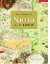

Der Filmstart des "Konig von Narnia" (12/05) bildet den Auftakt zur Verfilmung der "Chroniken von Narnia". Fur die zu erwartende Nachfrage steht nur dieser Sammelband zur Verfugung. Angefangen vom "Wunder von Narnia" bis "Der letzte Kampf" enthalt er ungekurzt alle 7 Bande in der ublichen Erzahlabfolge. Der Verlag griff auf die bewahrten Ubersetzungen von U. Neckenauer, L. Tetzner, und H. Eich zuruck. Auch beim "Konig von Narnia" wurde die verlagseigene Neuubersetzung (BA 11/05) nicht berucksichtigt, wohl um die Leser nicht mit den hier aus dem Original ubernommenen Eigennamen zu verwirren. Der optisch opulent und liebevoll gemachte Titel verfugt uber das englische Originalcover, das hervorragend auf die fantastische Welt einstimmt. Im Inneren uberzeugen die schone Seitengestaltung mit Rahmen und ZweiSpaßtendruck sowie die bunten, detailreichen und Fantasie anregenden Zeichnungen von Pau